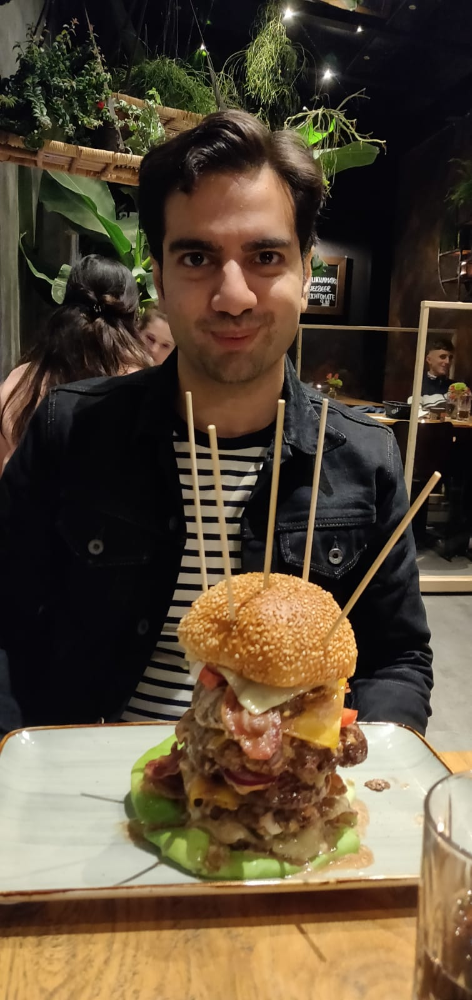

Muhammad Hassan
Emmy Noether Junior Research Group Leader Chair of Global Analysis, Technical University of Munich
I work on the mathematical and numerical analysis of electronic structure methods — the algorithms chemists and physicists use to compute the properties of molecules and materials from the electronic Schrödinger equation.
My group at the Chair of Global Analysis is funded by an Emmy Noether Grant of the DFG. Before moving to Munich, I worked at the Laboratory for Simulation and Modelling at the Paul Scherrer Institute, and was a post-doc at the Institute of Mathematics at EPFL with Laura Grigori and at the Laboratoire Jacques-Louis Lions, Sorbonne Université, with Yvon Maday. I wrote my PhD dissertation under Benjamin Stamm at RWTH Aachen, and before that my MS thesis under Siddhartha Mishra at ETH Zürich.

- muhammad.hassan [at] cit.tum.de
- Office
- 03.08.035, Boltzmannstr. 3, Garching Campus
- Profiles
- Google Scholar · ORCID
Research
I am a numerical analyst by training. My current research focuses on electronic structure methods, eigenvalue problems and domain decomposition methods, as well as hybrid quantum/classical algorithms. During my PhD, I worked on boundary integral equations with applications in polarisable electrostatics.
Wave-function methods
Coupled cluster and DMRG methods for the electronic Schrödinger equation.
Eigenvalue problems
Band structures of crystalline materials and nonlinear eigenvalue problems.
Domain decomposition
Schwarz methods: scalability and applications.
Hybrid quantum algorithms
Variational quantum/classical algorithms for quantum chemistry.
Integral equations
Electrostatic interactions between many polarisable particles.
All publications →
The complete list, including preprints and theses.
News
- May 2026
- Viktorie Volejníková has joined the group as a PhD student. Viktorie holds an MSc from FU Berlin. Welcome, Viktorie!
- Mar 2026
- Together with Benjamin Stamm (Universität Stuttgart), I organised the Modelling, Analysis and Simulation of Molecular Systems section at the 2026 GAMM Annual Meeting in Stuttgart.
- Nov 2025
- Together with Gero Friesecke (TU Munich), I organised the 2025 Annual Meeting of the GAMM activity group Modelling, Analysis and Simulation of Molecular Systems at the TUM Institute for Advanced Study.
- Oct 2025
- Alfred Kirsch has joined the group as a post-doctoral researcher. Welcome, Alfred!